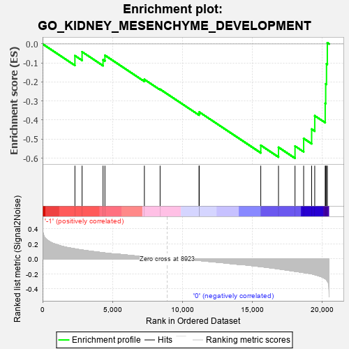
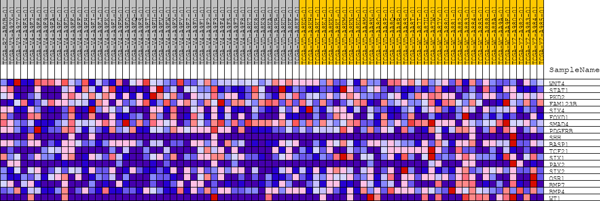
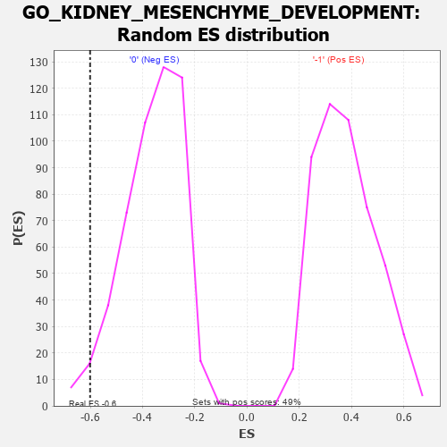

| | | Dataset | GSEAExpression.phenotype_uvm.cls#-1_versus_0 |
| Phenotype | phenotype_uvm.cls#-1_versus_0 |
| Upregulated in class | 0 |
| GeneSet | GO_KIDNEY_MESENCHYME_DEVELOPMENT |
| Enrichment Score (ES) | -0.6008189 |
| Normalized Enrichment Score (NES) | -1.6636401 |
| Nominal p-value | 0.02739726 |
| FDR q-value | 1.0 |
| FWER p-Value | 0.982 |
Table: GSEA Results Summary

Fig 1: Enrichment plot: GO_KIDNEY_MESENCHYME_DEVELOPMENT
Profile of the Running ES Score & Positions of GeneSet Members on the Rank Ordered List
| PROBE | DESCRIPTION
(from dataset) | GENE SYMBOL | GENE_TITLE | RANK IN GENE LIST | RANK METRIC SCORE | RUNNING ES | CORE ENRICHMENT | | 1 | WNT4 | na | | | 2316 | 0.134 | -0.0617 | No |
| 2 | STAT1 | na | | | 2829 | 0.118 | -0.0413 | No |
| 3 | PKD2 | na | | | 4331 | 0.082 | -0.0833 | No |
| 4 | FAM123B | na | | | 4465 | 0.079 | -0.0596 | No |
| 5 | SIX4 | na | | | 7290 | 0.028 | -0.1866 | No |
| 6 | FOXD1 | na | | | 8416 | 0.009 | -0.2382 | No |
| 7 | SMAD4 | na | | | 11206 | -0.022 | -0.3657 | No |
| 8 | PDGFRB | na | | | 11219 | -0.022 | -0.3577 | No |
| 9 | SHH | na | | | 15626 | -0.104 | -0.5327 | No |
| 10 | BASP1 | na | | | 16895 | -0.134 | -0.5432 | Yes |
| 11 | TCF21 | na | | | 18078 | -0.167 | -0.5368 | Yes |
| 12 | SIX1 | na | | | 18697 | -0.183 | -0.4967 | Yes |
| 13 | PAX2 | na | | | 19269 | -0.200 | -0.4478 | Yes |
| 14 | SIX2 | na | | | 19491 | -0.211 | -0.3775 | Yes |
| 15 | OSR1 | na | | | 20240 | -0.265 | -0.3121 | Yes |
| 16 | BMP7 | na | | | 20275 | -0.270 | -0.2100 | Yes |
| 17 | BMP4 | na | | | 20333 | -0.282 | -0.1045 | Yes |
| 18 | WT1 | na | | | 20392 | -0.296 | 0.0061 | Yes |
Table: GSEA details [plain text format]

Fig 2: GO_KIDNEY_MESENCHYME_DEVELOPMENT
Blue-Pink O' Gram in the Space of the Analyzed GeneSet

Fig 3: GO_KIDNEY_MESENCHYME_DEVELOPMENT: Random ES distribution
Gene set null distribution of ES for GO_KIDNEY_MESENCHYME_DEVELOPMENT